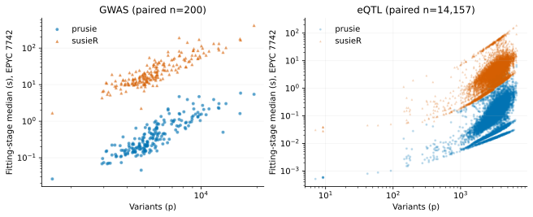
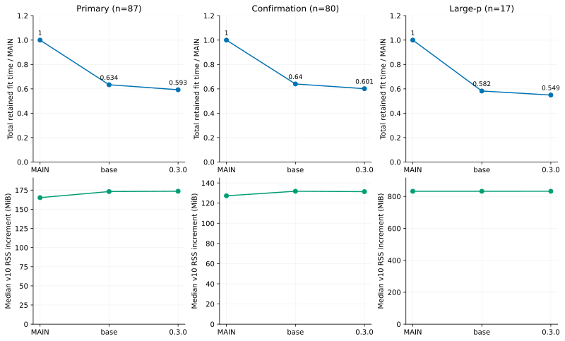

On this page
Performance
These measurements assess the time and memory required for SuSiE-RSS fine-mapping with prusie 0.3.0 and susieR 0.16.6. The comparison uses fresh fits on FinnGen R13 type 2 diabetes GWAS loci and GTEx v11 Whole_Blood eQTL analyses. Runtime is measured on Burgundy using exclusive AMD EPYC 7742 nodes, with complete-call and fitting-stage times from the same calls. Peak resident set size (RSS) comes from the earlier local AMD EPYC 9754 measurements.
Measured prusie 0.3.0 against fresh susieR 0.16.6 fits.
| Analysis | Cases | Complete-call speed-up¹ | Fitting-stage speed-up¹ | Complete-call sum-of-medians² | Peak RSS ratio³ |
|---|---|---|---|---|---|
| GWAS | 200 | 49.2× | 55.4× | 42.9× | 3.66× |
| eQTL | 14157 | 26.6× | 29.8× | 26.6× | 3.77× |
¹ Sum of three retained R times divided by the corresponding prusie total, on exclusive AMD EPYC 7742 nodes. The fitting stage excludes input/LD preparation. ² Sum of within-case R medians divided by the sum of prusie medians. ³ Median paired R/prusie fresh-process peak RSS from the earlier local AMD EPYC 9754 measurements, including interpreter and inputs. Runtime and memory have separate origins.
The runtime comparison uses one numerical thread per fit. The protocol records the timing boundaries and software identities; reproducibility identifies the frozen release and its timing-instrumented copy. Numerical accuracy reports agreement with fresh susieR under the alpha criterion.
Data
The fixed panel contains 200 FinnGen R13 type 2 diabetes GWAS loci (n = 486,019; 89,727 cases and 396,292 controls) and 14,157 GTEx v11 Whole_Blood genes (n = 800). GWAS is fitted with the frozen Gaussian RSS approximation. All cases remain accounted for, including iteration-limit outputs, empty credible sets, numerical discrepancies and operational failures. Gene windows and study participants overlap; cases are not independent biological replications.
| Analysis | Cases | Variants per case | Alpha passes / failures / unavailable | Unresolved case failures |
|---|---|---|---|---|
| GWAS | 200 | 1575 to 19221 | 200 / 0 / 0 | 0 |
| eQTL | 14157 | 7 to 6862 | 14155 / 2 / 0 | 0 |
For each case, prusie and susieR use the same aligned summary statistics, variant order and signed LD matrix. LD comes from external 1000 Genomes reference samples: 99 Finnish (FIN) samples for GWAS and 525 European (EUR) samples for eQTL. EUR describes the LD reference; the GTEx association cohort was not restricted to European ancestry for this comparison. See the input sources for study and reference provenance and harmonization details.
The alpha counts use the complete-matrix comparison criterion. Any discrepancy remains included in the descriptive performance summaries; numerical accuracy lists individual exceedances.
Methods
Complete-call timing surrounds the public susie_rss call, including input
validation, RSS preparation, IBSS, posterior summaries and credible-set
construction. The added fitting-stage metric directly times solver
initialization, IBSS/SER, ELBO and convergence calculations, and final
posterior/credible-set construction. Full input handling, LD checks, repair
and forced symmetrization are excluded from the fitting stage but still run.
Imports, file reads, LD reconstruction, explicit garbage collection,
numerical comparisons and exports are outside both clocks.
Each case/backend starts in a fresh process, loads inputs untimed, then makes
one warmup and three retained calls. The two backends run sequentially on
the same lane in a seeded, balanced order. The primary comparison uses
n_threads=1 and overwrite_ld=False. The three-repeat protocol follows the
2026-10-28 amendment: 24 cases had already completed seven retained calls;
their first three are used, with every original observation preserved.
Nodes are exclusive and use the same CPU model. Each timing lane occupies one physical core in an L3 domain; its other cores and SMT sibling stay idle. One separate L3 domain serves the coordinator. Memory is bound to the lane's NUMA node where supported, with any fallback recorded. Admission reserves at most 90% of node memory using prior measured peaks as planning estimates and allows at most four cases per socket with an LD matrix larger than 1 GiB. These reservations are estimates, not per-process memory guarantees.
Inputs are staged to node-local storage. Signed LD is reconstructed with single-thread PLINK before each case and removed afterwards. The variants, order, alleles, z-scores and genotype/sample source match the local panel; the reconstructed LD need not be bitwise identical. In the 24-case fidelity sample, the maximum absolute LD difference was , with no sign disagreements. PLINK made 22 previously slightly asymmetric matrices exactly symmetric. This can affect the native validation/allocation path, so changes from local timing cannot be attributed solely to reduced interference.
Both metrics use instrumented copies of the frozen artifacts. Eight-case qualification preserved final alpha/PIP arrays bit for bit and recorded the same iteration, convergence and CS-count outcomes. Instrumented/original median complete-call ratios ranged from 0.805 to 1.026 for prusie and 0.957 to 1.064 for R. These observations include order and binary-layout effects and do not isolate timestamp overhead. Exact boundaries and limitations are documented with the instrumentation.
For each metric, the headline speed-up is the sum of all three retained R times divided by the corresponding prusie total. The sum-of-medians sensitivity divides the sum of within-case R medians by the sum of prusie medians. The geometric mean of within-case median ratios gives each case equal weight. These are separate summaries with different weighting.
The retained memory experiment used a new process per case/backend on the local AMD EPYC 9754. It fitted once and read the resident-memory high-water mark immediately afterwards, before comparisons or serialization. Peaks include the interpreter, imports, input loading, preloaded validation reference and fit. Published memory ratios are medians of within-case R/prusie peak ratios. Current Burgundy process peaks are diagnostics only.
Fits request L=10 components, capped at the variant count, with tol=0.001,
max_iter=100, scaled_prior_variance=0.2, estimated prior variance
(estimate_prior_method="optim") and fixed residual variance 1
(estimate_residual_variance=False). Both implementations use uniform variant
priors, null_weight=0, standardize=True, coverage=0.95 and
min_abs_corr=0.5. Credible-set purity uses all pairs of set members, with
n_purity set to the case's variant count. Calls use the Wald RSS adjustment,
ELBO convergence, check_prior=True and refine=False. With
check_input=False, optional eigenvalue and eigenspace diagnostics are skipped;
prusie's basic matrix validation remains within the timed call. Iteration
counts and convergence are retained in the records.
Every complete positive timing pair enters the descriptive timing summaries, including iteration-limit fits, empty credible sets and alpha discrepancies. Memory summaries use complete memory pairs; operational failures remain accounted for separately. Agreement with susieR does not establish model validity.
Results
Runtime
| Analysis | Metric | prusie median (ms) | R median (ms) | Total R/prusie | Sum-of-medians | Geometric mean | Faster / tied / slower |
|---|---|---|---|---|---|---|---|
| GWAS | Complete call | 393 | 1.87e+04 | 49.2× | 42.9× | 47.7× | 200 / 0 / 0 |
| GWAS | Fitting stage | 317 | 1.82e+04 | 55.4× | 48.1× | 56.5× | 200 / 0 / 0 |
| eQTL | Complete call | 130 | 3.82e+03 | 26.6× | 26.6× | 27.8× | 14157 / 0 / 0 |
| eQTL | Fitting stage | 104 | 3.62e+03 | 29.8× | 29.8× | 35.3× | 14157 / 0 / 0 |
Runtime entries are medians across cases of the three-repeat within-case medians. Faster/tied/slower counts compare those within-case medians. The per-case records retain individual repeats, timestamps, iteration counts, convergence flags and credible-set counts.
The GWAS headline is sensitive to two retained R outliers: the total-time ratio is 49.20×, compared with 42.86× for the sum of case medians. The fitting-stage ratios are 55.35× and 48.06×, respectively. A third R outlier affects the nested windows, whose complete-call ratios are 140.46× and 70.21×. These three calls shared NUMA domain 0 on cpunode-029 during the interval ending in the recorded out-of-memory event. Their placement and timestamps are consistent with local memory pressure, although the stalls themselves were not profiled. All calls remain included; none was rerun or discarded because of its duration.



| Analysis | Complete-call timing | Backend | Median IQR/median | Cases with a repeat >3× median | Time in repeats >2× median |
|---|---|---|---|---|---|
| GWAS | Burgundy, 3 calls | prusie | 0.0128 | 0 | 0% |
| GWAS | Burgundy, 3 calls | susieR | 0.00668 | 2 | 15.2% |
| GWAS | Local, first 3 calls | prusie | 0.105 | 0 | 0% |
| GWAS | Local, first 3 calls | susieR | 0.109 | 0 | 1.63% |
| eQTL | Burgundy, 3 calls | prusie | 0.0231 | 0 | 0% |
| eQTL | Burgundy, 3 calls | susieR | 0.021 | 0 | 0% |
| eQTL | Local, first 3 calls | prusie | 0.102 | 128 | 3.02% |
| eQTL | Local, first 3 calls | susieR | 0.0873 | 0 | 0.0111% |
IQR/median is computed within each case and then summarized across cases. The earlier local seven-repeat comparison is also restricted to its first three retained calls for this sensitivity check. The full seven-repeat statistics and variant-count quintiles remain in the machine-readable summary. Both eQTL backends and native GWAS had no retained repeat above twice its case median. The two extreme R GWAS repeats account for 15.23% of total retained R GWAS time; the one extreme nested-window repeat accounts for 52.53% of that panel's R total. Thus typical variability fell substantially, but exclusive nodes did not eliminate every source of interference. The individual extreme calls remain available with timestamps and both measured durations.
Memory
| Analysis / backend | Fresh-process peak RSS, across-case median (MiB) | Measured cases |
|---|---|---|
| GWAS / prusie | 478 | 200 |
| GWAS / susieR | 1.76e+03 | 200 |
| eQTL / prusie | 229 | 14157 |
| eQTL / susieR | 883 | 14157 |
Each peak-RSS entry is a separate median across cases from the local AMD EPYC 9754. The paired memory ratio in the opening table is calculated within each case before taking its median, as defined in Methods.

The following distributions show Burgundy complete-call and fitting-stage ratios, followed by the earlier local memory ratios.

Thread scaling
The controlled Burgundy experiment used exclusive AMD EPYC 7742 nodes and 87 fixed real-data cases. Ratios below first pair each retained call with its one-thread counterpart, take the median within each case, and then the median across cases. Lower ratios mean shorter runtime.
| Threads | Median time / one-thread time | Faster / tied / slower, out of 87 |
|---|---|---|
| 2 | 0.799 | 87 / 0 / 0 |
| 4 | 0.735 | 87 / 0 / 0 |
| 8 | 0.783 | 79 / 0 / 8 |
Four threads had the lowest median ratio. Eight threads were slower than four
in 52 of 87 cases; their paired median eight/four ratio was 1.052. Eight
threads were also slower than one in 8 cases. See
Threads for the 2–4-thread guidance and the work
controlled by n_threads. These are the retained controlled M1 measurements;
the loaded-host M2 thread series is not used for this guidance.
LD overwrite
The separate local AMD EPYC 9754 memory experiment used 200 GWAS cases and
one numerical thread. With overwrite_ld=True, 173 cases had a material
reduction in fresh-process peak RSS; 27 had no material saving. Differences
of about 1.1 MiB or less are ties at measurement resolution, rather than evidence
of higher peaks. In the 27 cases without material saving, the median peak was
about 1.34 times the LD matrix bytes in both modes. The median within-case
False/True peak ratio over all 200 cases was 1.72.
For ordinary z/LD/sample-size fits, the default path can reuse an aligned, C-contiguous float64 LD matrix without a second full dense working copy when its native exact-symmetry/correlation checks and implicit-scaling bounds succeed. Repair, layout conversion, stronger input checks, retained analysis state and exceptional scaling can require additional matrix storage. This statement concerns the storage path; peak RSS alone does not identify which branch a particular fit used.
The separate controlled M1 experiment reported a median paired-round runtime ratio of 0.810 for True/False on 87 cases (75 faster, 12 slower). Its acceptance criterion concerned memory; this runtime result is descriptive.
This option may consume the caller's LD array even if the call later fails. Reload the original LD before reuse. The LD workspace contract describes supported inputs and ownership.

Nested locus windows
This series takes nested sets of leading variants, in their frozen order, from the largest FinnGen T2D locus. Fitting settings follow Methods. These measurements describe one locus and its observed convergence paths; they are not independent loci or a complexity-law study.
| Leading variants | Backend | Complete-call median (s) | Fitting-stage median (s) | Observed iterations | Converged | Earlier EPYC 9754 peak RSS (MiB) |
|---|---|---|---|---|---|---|
| 500 | prusie | 0.0105 | 0.00966 | 14 | True | 49.8 |
| 500 | susieR | 0.463 | 0.46 | 14 | True | 282 |
| 1000 | prusie | 0.0231 | 0.0206 | 15 | True | 55.4 |
| 1000 | susieR | 1.29 | 1.28 | 15 | True | 319 |
| 2000 | prusie | 0.0403 | 0.0298 | 5 | True | 80.6 |
| 2000 | susieR | 1.26 | 1.22 | 5 | True | 413 |
| 4000 | prusie | 0.169 | 0.127 | 11 | True | 180 |
| 4000 | susieR | 10.2 | 9.94 | 11 | True | 1.29e+03 |
| 10000 | prusie | 1.02 | 0.795 | 17 | True | 863 |
| 10000 | susieR | 71.1 | 69.3 | 17 | True | 3.91e+03 |
| 19221 | prusie | 5.84 | 4.92 | 28 | True | 5.95e+03 |
| 19221 | susieR | 415 | 408 | 28 | True | 1.72e+04 |

Dense LD matrices are materialized before fitting, and peak process RSS includes input loading. Lines connect measured windows; iteration counts change with window size. Runtime and iteration results use Burgundy inputs; the displayed memory results retain the earlier local inputs and host.
Reproducibility
- Frozen release code:
6d60d5e5723461c3e1fc5a46fd0a0e7b6378cfa7 - Original release wheel SHA-256:
85285c26c1f6ae3caaed99c4d7766ede7f0083ea98eb2d26b7763d8654840b59 - Original native extension SHA-256:
a9d377e45583b654ddfbe8323a783e32a61bf042c755cb26c3873f2065ed0b3e - Burgundy protocol SHA-256:
3893ec7f92fc042f15eade88a4c27a452835bf3285dfda037d6133c55fc56825 - Statistical reference: R 4.4.0; susieR 0.16.6,
8e56a8e038e989856d106d9ca5175cc664fea9d2.
Both runtime metrics use run-local timing instrumentation derived from these frozen artifacts. The native binary differs from the release binary; the original wheel is preserved. The instrumentation patch, derived binary hashes, source boundaries and qualification results are in the measurement archive. Earlier local memory measurements retain their original measured build identity.
The Burgundy summary and compressed per-case records retain both timing metrics, call timestamps, iteration/convergence outcomes and numerical differences. The protocol and archive guide document construction and instrumentation. The earlier local records remain the source for peak RSS and LD overwrite. The separate paired optimization records support Earlier measurements.
These records retain locus and gene identifiers but omit association vectors, LD matrices and individual genotypes. Repeating fits requires the aligned inputs and fitting settings described in Methods and the real-input guide.
From the repository root, redraw the figures and regenerate this page's tables from the retained measurements:
python tools/benchmark/v030.py figures
python tools/generate_results.py --pages docs/performance.md
These commands need no R or association inputs and run no new fits. Add
--check to the second command to verify generated text without rewriting it.
The reproducibility guide gives
dependencies and the full documentation build commands.
Earlier measurements
Separate paired measurements compare the measured 0.3.0 wheel with earlier prusie implementations on fixed real-data panels: 87 primary cases, 80 confirmation cases and 17 cases with large variant counts. These measurements use AMD EPYC 7742 processors on Burgundy and the paired protocol v10.
The cumulative runtime comparison uses one numerical thread and sums the
original eight retained complete calls per case, following one warm-up. Across
all 184 cases, total historical-baseline time divided by total 0.3.0 time is
1.73; total intermediate-baseline time divided by total 0.3.0 time is 1.06.
The figure labels these frozen baselines MAIN and base, respectively.
Memory in this series is post-fit VmHWM minus current VmRSS immediately
before fitting. Pre-fit high-water excess is recorded separately. The figure
reports the across-case median of within-case median increments, in MiB.
This differs from the full-process peak RSS used in the
primary comparison.


| Comparison | Fixed panel | v10 decision | Retained rounds | Applicable / all cases | v10 paired-round runtime W / T / R | Case-median runtime W / T / R | Incremental-memory W / T / R | Role |
|---|---|---|---|---|---|---|---|---|
| 0.3.0 vs intermediate baseline | Primary (87) | DIAGNOSTIC_ONLY | 8 | 87 / 87 | 75 / 0 / 12 | 73 / 0 / 14 | 27 / 0 / 60 | descriptive |
| 0.3.0 vs intermediate baseline | Confirmation (80) | DIAGNOSTIC_ONLY | 8 | 80 / 80 | 71 / 0 / 9 | 71 / 0 / 9 | 36 / 0 / 44 | descriptive |
| 0.3.0 vs intermediate baseline | Large-p (17) | DIAGNOSTIC_ONLY | 8 | 17 / 17 | 13 / 0 / 4 | 13 / 0 / 4 | 6 / 0 / 11 | descriptive |
| 0.3.0 vs historical baseline | Primary (87) | DIAGNOSTIC_ONLY | 8 | 87 / 87 | 87 / 0 / 0 | 87 / 0 / 0 | 28 / 0 / 59 | descriptive |
| 0.3.0 vs historical baseline | Confirmation (80) | DIAGNOSTIC_ONLY | 8 | 80 / 80 | 78 / 0 / 2 | 78 / 0 / 2 | 35 / 1 / 44 | descriptive |
| 0.3.0 vs historical baseline | Large-p (17) | DIAGNOSTIC_ONLY | 8 | 17 / 17 | 17 / 0 / 0 | 17 / 0 / 0 | 7 / 0 / 10 | descriptive |
| 0.3.0 vs previously optimized baseline | Primary (87) | ACCEPTED | 16 | 87 / 87 | 36 / 0 / 51 | 34 / 0 / 53 | 62 / 0 / 25 | non-regression check |
| 0.3.0 vs previously optimized baseline | Confirmation (80) | ACCEPTED | 16 | 80 / 80 | 34 / 0 / 46 | 32 / 0 / 48 | 51 / 0 / 29 | non-regression check |
| 0.3.0 vs previously optimized baseline | Large-p (17) | UNRESOLVED_QUALITY | 16 | 17 / 17 | 5 / 0 / 12 | 5 / 0 / 12 | 17 / 0 / 0 | non-regression check |
| n_threads=2 vs 1 | Primary (87) | DIAGNOSTIC_ONLY | 8 | 87 / 87 | 87 / 0 / 0 | 87 / 0 / 0 | 56 / 1 / 30 | descriptive |
| n_threads=2 vs 1 | Confirmation (80) | DIAGNOSTIC_ONLY | 8 | 78 / 80 | 78 / 0 / 0 | 78 / 0 / 0 | 52 / 1 / 25 | descriptive |
| n_threads=2 vs 1 | Large-p (17) | DIAGNOSTIC_ONLY | 8 | 17 / 17 | 17 / 0 / 0 | 17 / 0 / 0 | 11 / 0 / 6 | descriptive |
| n_threads=4 vs 1 | Primary (87) | ACCEPTED | 8 | 87 / 87 | 87 / 0 / 0 | 87 / 0 / 0 | 52 / 0 / 35 | four-thread option |
| n_threads=4 vs 1 | Confirmation (80) | ACCEPTED | 8 | 78 / 80 | 78 / 0 / 0 | 78 / 0 / 0 | 56 / 0 / 22 | four-thread option |
| n_threads=4 vs 1 | Large-p (17) | ACCEPTED | 8 | 17 / 17 | 17 / 0 / 0 | 17 / 0 / 0 | 12 / 0 / 5 | four-thread option |
| n_threads=8 vs 1 | Primary (87) | DIAGNOSTIC_ONLY | 8 | 87 / 87 | 79 / 0 / 8 | 79 / 0 / 8 | 58 / 2 / 27 | descriptive |
| n_threads=8 vs 1 | Confirmation (80) | DIAGNOSTIC_ONLY | 8 | 78 / 80 | 69 / 0 / 9 | 69 / 0 / 9 | 55 / 3 / 20 | descriptive |
| n_threads=8 vs 1 | Large-p (17) | DIAGNOSTIC_ONLY | 8 | 17 / 17 | 14 / 0 / 3 | 14 / 0 / 3 | 10 / 0 / 7 | descriptive |
| overwrite_ld=True vs False | Primary (87) | ACCEPTED | 8 | 87 / 87 | 75 / 0 / 12 | 78 / 0 / 9 | 80 / 6 / 1 | memory comparison |
| overwrite_ld=True vs False | Confirmation (80) | ACCEPTED | 8 | 80 / 80 | 70 / 0 / 10 | 69 / 0 / 11 | 77 / 1 / 2 | memory comparison |
| overwrite_ld=True vs False | Large-p (17) | ACCEPTED | 8 | 17 / 17 | 16 / 0 / 1 | 17 / 0 / 0 | 14 / 2 / 1 | memory comparison |
These are earlier controlled Burgundy measurements. Cumulative totals do not replace the fixed-panel majority, stratified non-regression check and robustness criteria. The v10 runtime count uses the median of paired-round time ratios; the additional case-median count compares the two within-case median times. These can differ. Memory counts compare within-case medians of incremental peaks. W / T / R means lower, equal and higher candidate measurements. A comparison with 16 retained rounds uses the protocol's single quality retry, pooling both complete windows only for comparisons whose first-window decision was unresolved. Other comparisons retain the original eight rounds. Initial decisions remain in the paired measurement records.
Eight of the nine non-diagnostic panel comparisons are ACCEPTED. The large-p
default-path comparison with the previously optimized baseline remains
UNRESOLVED_QUALITY: no stratified non-regression veto was observed, but
resampling agreement for that decision was 0.942, below the required 0.95,
after the single permitted quality retry. This result remains an exception to
the robustness criterion. The instruction-count follow-up below addresses
the recorded large-p slowdown without changing that historical result.
The paired measurement records retain software identities, hardware, individual observations, repeat variability and initial decisions as well as the final comparisons above.
Large-p instruction-count follow-up
A separate Burgundy check compared the measured 0.3.0 integration with its previously optimized parent on the same 17 large-p cases. All user-space instruction-count differences were within the predeclared 0.2% bound; the largest was 0.00480%. Two repetitions on two cases gave a maximum difference of 0.00107%. Under that rule, the conclusion is “no code-path difference; attributed to timing noise.” The historical timing-quality result remains recorded as unresolved; this diagnosis does not rewrite its raw measurements.